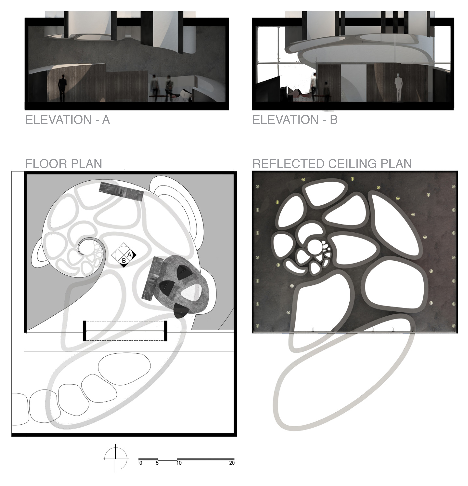
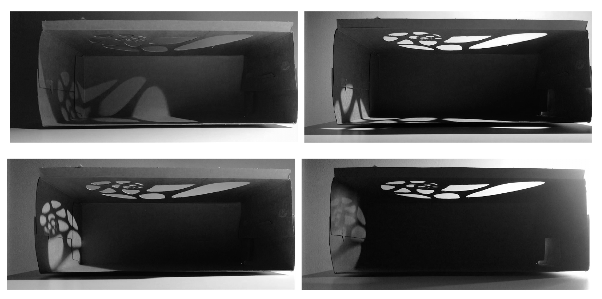

A candidate for IDEC’s Experience Design competition, the Fibonacci’s Labyrinth utilizes the golden ratio to bring about a natural comfort that is immediately recognizable. Mother Earth has utilized this beautiful fusion of art and mathematics to create, and Fibonacci's Labyrinth follows suit. The history of labyrinths ties closely with meditation as they have been used as a spiritual tool for thousands of years. As people walk into the single line path, they ponder their discomfort and troubles. Once reaching the center, they meditate to the kiss of daylight, and leave their inner burdens in the center of the labyrinth as they retreat out the same path.

The designed space aims to guide the user through a natural path to induce a meditative experience with the center as the apex. Through elements of enticement (natural circulation), refuge, prospect, and natural lighting, the space encapsulates the natural environment to make this journey as spiritually connected to Mother Nature as possible.

This was achieved through the manipulation of interior forms and the selection of materials. Interior congregation came as secondary importance to the circulation, but is included to induce the aspect of prospect in the space. As a result, Fibonacci’s Labyrinth effectively becomes a voyage in which one can reflect on personal distress to come out with a newfound perspective and revelation towards his/her problems.